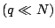
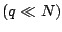

For many dense linear systems of size  the
availability of an algorithm based on the fast multipole
method (FMM) provides a matrix vector product with
the
availability of an algorithm based on the fast multipole
method (FMM) provides a matrix vector product with
 time and memory complexity. This reduces the cost of the
matrix-vector product step in the iterative solution of
linear systems, and for an iteration requiring
steps, a complexity of of
time and memory complexity. This reduces the cost of the
matrix-vector product step in the iterative solution of
linear systems, and for an iteration requiring
steps, a complexity of of
 can be
expected. To bound appropriate pre-conditioning
strategies must be used. However, many conventional
pre-conditioning strategies rely on sparsity in the matrix,
and applying them to these dense matrices requires
computations that have a formal time or memory complexity of
can be
expected. To bound appropriate pre-conditioning
strategies must be used. However, many conventional
pre-conditioning strategies rely on sparsity in the matrix,
and applying them to these dense matrices requires
computations that have a formal time or memory complexity of
 , which negates the advantage of the FMM.
, which negates the advantage of the FMM.
We explore the application of two preconditioning strategies to the FMM. In the first, which was applied to the FMM solution of a multiple scattering problem for the Helmholtz equation in three dimensions, the system was solved using the flexible GMRES algorithm. The choice of the (right) preconditioning matrix was based on GMRES solution of a linear system with an approximation to the matrix that is based on a partitioning that is performed in the FMM itself. We describe details of this iterative technique and its performance on some large multiple scattering problems.
In the second iterative solution, we consider an iterative
algorithm of Faul et al. [1] for the solution of the
radial basis function (RBF) interpolation problem. In this
problem the goal is to construct an interpolating function
for a set of scattered data points, with the interpolating
function expressed as a sum of RBFs centered at the data
points. The iterative algorithm of Faul et al. can be
accelerated by the use of the FMM for the matrix vector
product required at each step. There however is a
precomputation stage that requires the construction of
approximate cardinal function interpolants centered at each
data point and  of its neighbors , that are
carefully selected. These interpolants are used to provide a
Krylov basis for the iteration. The complexity of these
preliminary calculations in Faul et al. is
of its neighbors , that are
carefully selected. These interpolants are used to provide a
Krylov basis for the iteration. The complexity of these
preliminary calculations in Faul et al. is  .
We provide a modification to this set-up stage and reduce
its complexity to linear order. Results will be presented
for the interpolation of large data sets in two and three
dimensions using multiquadric and polyharmonic radial basis
functions.
.
We provide a modification to this set-up stage and reduce
its complexity to linear order. Results will be presented
for the interpolation of large data sets in two and three
dimensions using multiquadric and polyharmonic radial basis
functions.
[1] A. C. Faul, G. Goodsell, M. J. D. Powell, A Krylov subspace algorithm for multiquadric interpolation in many dimensions, IMA Journal of Numerical Analysis 25 (2005) 1-24.